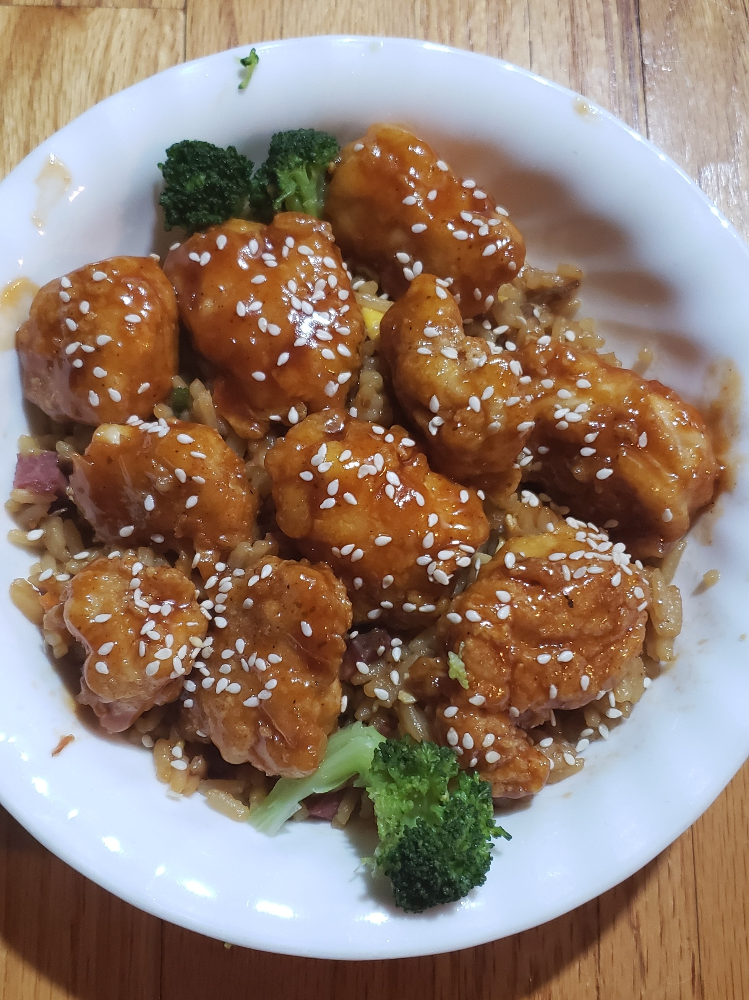

Sticky Chicken

Indulge in a tantalizing culinary adventure with this Sticky Chicken recipe. This dish boasts succulent chicken breast chunks, perfectly seasoned with a tantalizing blend of salt, pepper, garlic salt, and paprika. The chicken is coated in a light, crispy batter created from a delightful mixture of cornflour and plain flour, and then gently fried to a golden, crunchy perfection in vegetable oil. The real magic happens when we drizzle this delectable chicken with a rich, sweet, and savory sauce. Crafted from sesame oil, minced garlic, Chinese rice vinegar, honey, sweet chili sauce, ketchup, brown sugar, and soy sauce, this sauce adds a luscious glaze that will leave your taste buds craving more. To serve, enjoy this delightful creation alongside fluffy boiled rice, garnished with a sprinkling of sesame seeds and a flourish of fresh spring onions. It's a mouthwatering combination that promises to transport your senses to a world of unforgettable flavors. Get ready to savor a delightful meal that's both easy to prepare and incredibly satisfying. Inspired by this recipe